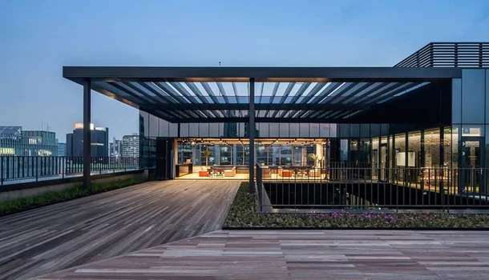
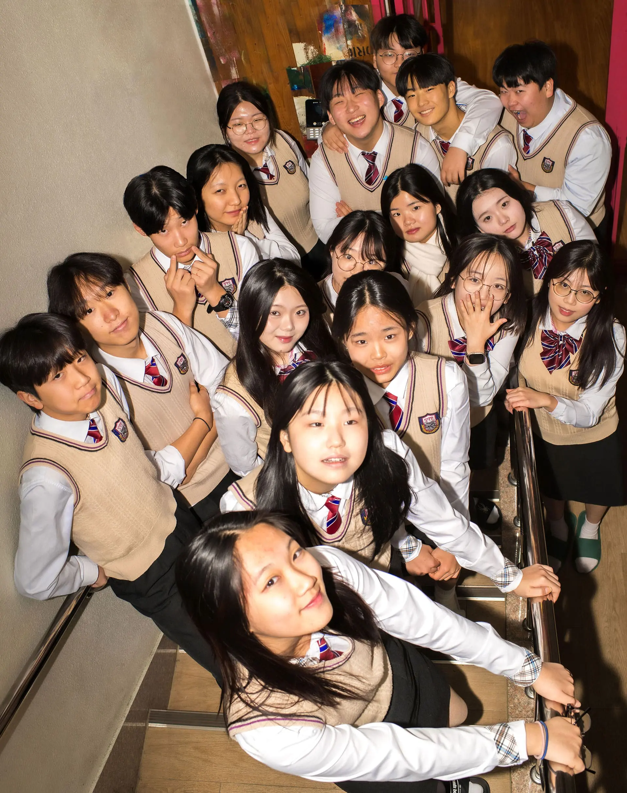
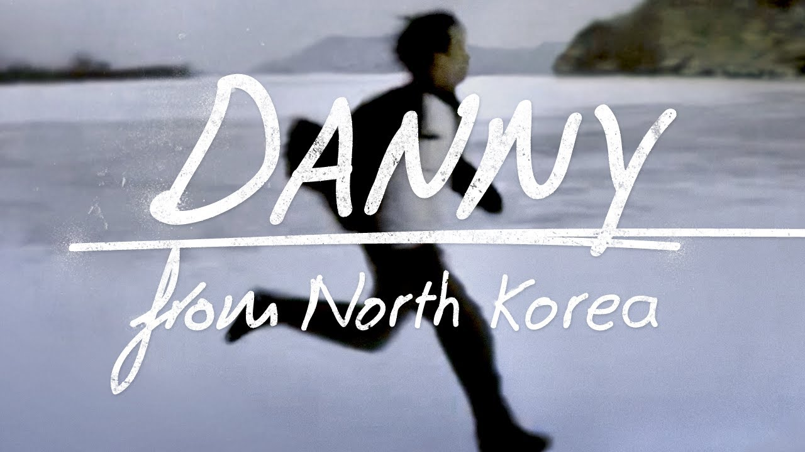
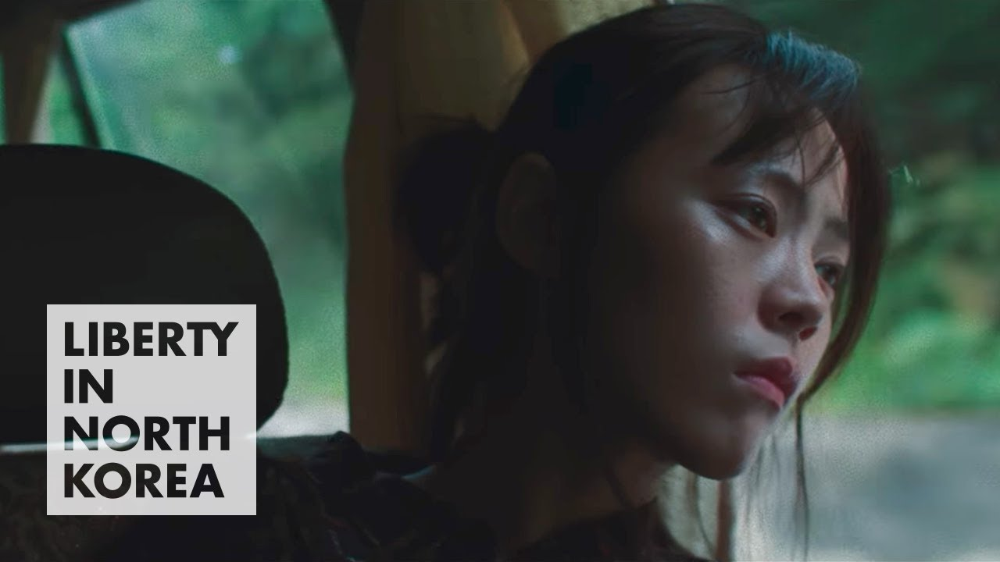
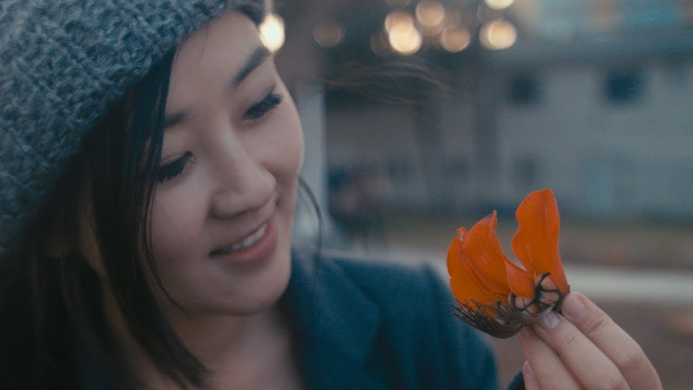
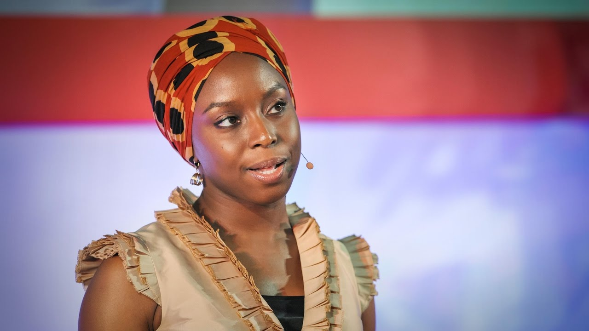
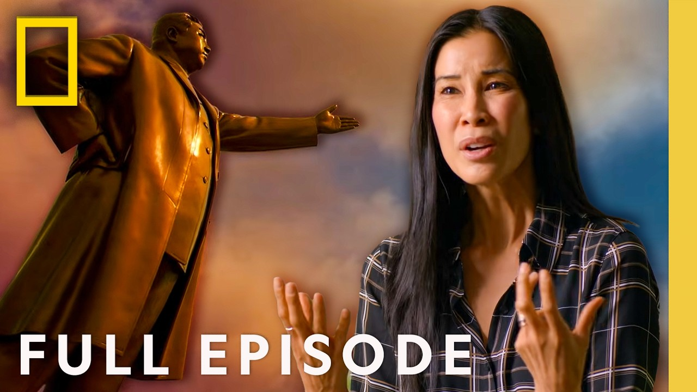
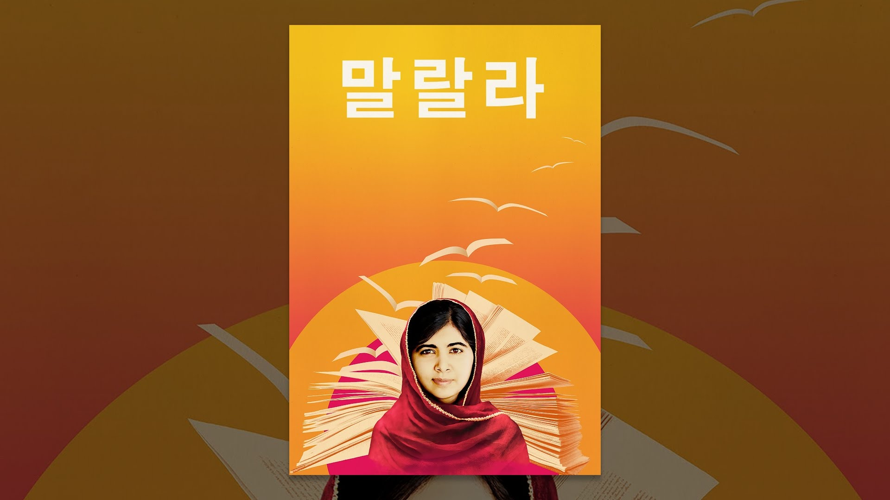

이메일 펜팔 (온라인)Email Pen Pal (Online)
48개국 다국적인 렐프 기존 봉사자와 다시 연결되는 시간입니다. 함께했던 봉사자와 이메일을 주고받으며 근황과 각국의 문화를 자유롭게 나눕니다. A time to reconnect with LELP's former volunteers from 48 countries — exchange emails and catch up on life and each other's cultures.
진행 방법How It Works
- 1기존 봉사자의 편지를 학생께 전달A former LELP volunteer's letter is delivered to you
- 2연락 온 이메일 내용에 맞춰 응답Reply based on what they wrote
- 3이후 자유롭게 주고받기From there, exchange emails freely
- 4가능한 영어로 작성Write in English as much as you can
내용 및 기간Program Details
함께하는 봉사자Who You'll Write With
미국, 캐나다, 브라질, 독일, 싱가포르 등 48개국에서 렐프와 함께해 온 기존 봉사자들이 참여합니다. Former LELP volunteers from 48 countries — the U.S., Canada, Brazil, Germany, Singapore, and more.
컬럼·에세이 쓰기 (온라인)Column & Essay Writing (Online)
내 이야기를 영어 글 한 편으로 완성해 보는 과정입니다. 코치와 함께 주제를 잡고, 아웃라인에서 초안, 수정까지 단계별로 진행하며, 완성된 글은 글쓴이 소개와 함께 링크 홈페이지에 게재됩니다. A step-by-step process to turn your own story into a finished piece of English writing — from picking a topic with a coach, through outline, draft, and revision. Finished pieces are published on LiNK's website with a short author bio.
이런 분들을 기다립니다
영어 글쓰기 실력을 키워서, 자신의 생각과 경험을 글로 잘 전달하고 싶은 분 누구나 지원할 수 있습니다.
이렇게 진행됩니다
- 19월 중순부터 11월 말까지 영문 컬럼 또는 에세이 한 편을 완성합니다.
- 2온라인 세션 2회, 그리고 개별 피드백과 코칭이 함께 진행됩니다.
- 3완성된 글은 링크 홈페이지에 게재됩니다.
반 선택 — 컬럼반 · 에세이반
컬럼반과 에세이반 중 하나를 선택해 지원합니다. 두 반은 글의 성격과 지원 가능 레벨, 테마가 다르니 아래 탭을 눌러 비교해 보세요. 테마는 참고용이며, 이를 바탕으로 자유 주제로 작성할 수 있습니다.
최근 북한 관련 이슈 중 관심 있는 주제를 하나 골라, 어떻게 해결하면 좋을지 써 주세요. (Daily NK 기사를 참고해 작성하셔도 됩니다.)
- 예: 북한 안에 있는 사람들이 외부 사회의 정보를 접하면 어떤 영향이 있을까? 정권의 눈을 피해 안전하게 보려면 어떤 방법이 있을까?
- 예: 한국이나 외국의 영화와 콘텐츠는 북한 이야기를 어떻게 다루고 있을까? 그것이 북한에 대한 대중의 인식에 어떤 영향을 줄까? 내가 감독이라면 어떤 이야기를 다루고 싶고, 그 이유는 무엇일까?
어떻게 하면 더 많은 사람이 북한 이슈에 관심을 갖고 참여할 수 있을까요?
- 예: K-pop과 한국 문화 열풍으로 한국에 오는 외국인이 늘고 있습니다. 이들에게 북한 문화를 알리면 어떨까? 어떤 방법으로 북한 인권 이슈에 참여하게 할 수 있을까?
북한 인권 문제를 해결하는 데 우리(당사자)의 역할은 무엇일까요?
대중이 미디어로 접한 북한은 김정은, 군인, 가난한 나라일지도 모릅니다. 하지만 북한도 사람들이 살아가는 곳이고, 저마다의 삶의 이야기가 있는 곳입니다. 기억에 남아 있는 고향 사람들의 이야기를 전해 주세요.
- 예: 내가 재미있게 본 외국 영화, 드라마, 노래
- 예: 나의 선생님, 나의 친구
- 예: 내가 즐겨 먹던 음식과 그 조리법
- 예: 나의 첫사랑, 잘 지내니?
- 예: 무더운 여름, 고향에서는 이렇게 보내곤 했지
- 예: 내 고향은 이런 동네야
10년 후 북한이 열린다면 가장 해 보고 싶은 일은 무엇인가요? 또는 북한에 처음 가 볼 친구에게 무엇을 소개해 주고 싶은가요?
- 예: 2035년 여름, 버디와 함께하는 북한 여행
- 예: 나의 첫 해외여행
- 예: 나에게 배움이란 무엇일까
- 예: 낯설지만 자유로운 이곳
커리큘럼
| 주차 | 진행 내용 |
|---|---|
| 1주 | [온라인 세션] OT와 글 구조 수업 |
| 2주 | [개별] 아웃라인 작성과 피드백 |
| 3–5주 | [개별] 초안 작성과 피드백 |
| 6주 | [온라인 세션] 초안 피드백 수업 |
| 7–8주 | [개별] 피드백 적용해 수정 |
| 9주 | [개별] 최종 완성 |
| 12월 중 | [오프라인] 쫑파티 & 베스트 아티클 시상 |
에세이반과 컬럼반은 주차별 일정은 같고, 수업 요일만 다르게 진행됩니다.
참여 시 지켜야 할 사항
- OT에 반드시 참여하고, 각 단계의 마감 기한을 지켜 주세요.
- AI 도구로 글을 작성하는 것은 금지입니다. 본인의 문장으로 써 주세요.
- 사실을 바탕으로 씁니다. 없던 일을 더하거나 부풀리지 않습니다.
- 링크 홈페이지에 게재될 때 글쓴이 소개(한국 이름 — 실명 또는 가명, 간단한 자기소개)가 함께 올라갑니다. 예시 보기
베스트 아티클
컬럼 부문과 에세이 부문에서 각 1명을 선발하며, 10만 원 상품권을 드립니다.
Game Day (오프라인)Game Day (Offline)
매칭된 버디, 다른 참가자, 링크 직원과 함께 게임하며 네트워킹하는 시간입니다. 여러분을 게임 데이에 초대합니다! Meet your matched buddy, fellow participants, and LiNK staff for an afternoon of games and networking. You are invited to Game Day!

서울시 성동구 뚝섬로1나길 5 (8층)HEYGROUND Seongsu Sky Lounge
5, Ttukseom-ro 1na-gil, Seongdong-gu, Seoul (8F)네이버지도에서 보기 ↗View on Naver Map ↗
| 시간Time | 내용Session |
|---|---|
| 15:30 | 도착 및 아이스브레이킹Arrival & icebreaker |
| 16:00 – 16:45 | 팀 게임Team games |
| 16:45 – 17:30 | 마피아 게임Mafia game |
| 17:45 – 19:00 | 저녁 식사Dinner |
- 1서울숲역(수인분당선) 4번 출구 — 도보 약 5분Seoul Forest Stn. (Suin-Bundang Line), Exit 4 — about a 5-minute walk
- 2뚝섬역(2호선) 8번 출구 — 도보 약 10분Ttukseom Stn. (Line 2), Exit 8 — about a 10-minute walk
행사장에는 주차 공간이 제공되지 않습니다. 대중교통 이용을 부탁드립니다. 차량으로 오시는 경우 인근 유료 주차장을 개별적으로 이용하셔야 하며, 주차비는 지원되지 않습니다. Parking is NOT available at the venue. Please use public transportation. If you drive, you will need to use a nearby paid lot at your own expense; parking fees are not reimbursed.
스페셜 위크 (온·오프라인)Special Weeks (On/Offline)
무비나이트(오프라인) 또는 온라인 다큐멘터리 시청 중 하나를 선택하는 필수 활동입니다 (모든 레벨 참여 가능). 참여 방식은 신청서에서 선택합니다. Choose either an offline Movie Night or an online documentary screening (open to all levels). You'll pick your format on the application form.
신청하기Apply선택 1 · 오프라인Option 1 · Offline
무비나이트 (오프라인)Movie Night (Offline)
참가자들과 함께 다큐멘터리를 보고 이야기를 나누는 오프라인 모임입니다. An offline meetup to watch a documentary together and talk about it afterward.

이번 무비나이트에서는 다큐멘터리 ‘School for Defectors’를 함께 봅니다. 탈북 청소년 20명이 부산 장대현학교에서 새로운 삶에 적응해가는 과정을 담은 작품으로, 이들을 트라우마의 피해자가 아니라 각자의 꿈과 우정을 가진 한 사람으로 그려내며 희망에 초점을 맞춥니다. This Movie Night screens the documentary ‘School for Defectors.’ It follows 20 teenage North Korean defectors building new lives at Jangdaehyun School in Busan — shifting the focus from trauma to hope, and portraying them as individuals with their own dreams and friendships rather than survivors defined by their past.
Dir. Jeremy Workman · 2026선택 2 · 온라인 — 아래 목록에서 한 편 선택Option 2 · Online — pick one title below
페어가 온라인으로 함께 LiNK 제작 다큐멘터리 3편 중 하나 — 또는 그 외 북한 인권 영상 — 를 시청한 뒤, 관련 주제로 대화를 나눕니다. Pairs watch one of three LiNK-produced documentaries — or an additional North Korean human rights video — together online, followed by a conversation on related topics.

북한에서 온 대니 (2013)Danny from North Korea (2013)
북한에서의 삶, 중국 탈출, 미국 정착까지 이어지는 대니의 여정을 담아 탈북의 현실을 보여줍니다. Danny's journey from North Korea through China to the U.S. — a personal look at the realities of defection.
보러가기 ↗Watch ↗
잘 자라 우리 아가 (2017)Sleep Well, My Baby (2017)
체포·착취·인신매매 위험 속에서 자유를 찾아가는 한 여성의 탈출 여정을 따라갑니다. Follows one woman's escape through China amid risks of arrest, exploitation, and trafficking.
보러가기 ↗Watch ↗
장마당세대 (2017)The Jangmadang Generation (2017)
장마당의 확산이 북한 사회와 세대 변화에 준 영향을 담은 LiNK 제작 다큐. 2024 부산국제영화제 상영작. LiNK's film on how informal markets reshaped a generation. Screened at Busan IFF 2024.
보러가기 ↗Watch ↗
The Danger of a Single Story
하나의 이야기만 반복될 때 생기는 편견과 왜곡을 짚으며 다양한 서사의 중요성을 강조하는 강연. How single narratives create stereotypes — and why diverse stories matter.
보러가기 ↗Watch ↗
Inside North Korea
외부 시선에서 본 북한 내부 — 통제된 사회 속 사람들의 일상을 보여줍니다. An outsider's view of everyday life inside a highly controlled society.
보러가기 ↗Watch ↗My Escape from North Korea
이현서가 직접 들려주는 탈북 경험 — 선택과 용기, 자유의 의미를 전합니다. Hyeonseo Lee's own escape story — choice, courage, and the meaning of freedom.
보러가기 ↗Watch ↗The Family I Lost in North Korea. And the Family I Gained
김조셉이 북한에서의 삶과 그 이후를 이야기하며, 정보와 경험이 인식을 어떻게 바꾸는지 보여줍니다. Joseph Kim on life in and beyond North Korea — how information transforms perspective.
보러가기 ↗Watch ↗
He Named Me Malala (2015)
여성 교육권을 위해 싸운 말랄라의 삶 — 한 개인의 목소리가 글로벌 인권 운동으로 확장되는 과정. Malala's fight for girls' education — one voice growing into a global movement.
보러가기 ↗Watch ↗The Social Dilemma (2020)
SNS 알고리즘이 행동과 사고를 어떻게 조작하는지 — 디지털 시대의 정보 통제와 인권 문제. How social media algorithms shape behavior — information control in the digital age.
보러가기 ↗Watch ↗The Defector: Escape from North Korea (2012)
탈북 과정을 구체적으로 따라가며, 탈출이 복잡한 선택의 연속임을 보여줍니다. Traces the escape journey — defection as a series of difficult choices.
보러가기 ↗Watch ↗Beyond Utopia (2023)
북한 주민의 탈출을 돕는 구조 활동을 따라가며 선택의 위험과 그 의미를 보여줍니다. Follows rescue missions helping North Koreans escape — the risks and what they mean.
보러가기 ↗Watch ↗프리덤 워크 앤 런 (오프라인)Freedom Walk & Run (Offline)
펀드레이징 및 북한 인권 인식 개선을 위한 걷기·달리기 참여형 활동입니다. A participatory walk/run for fundraising and North Korean human rights awareness.
신청하기ApplySpeech Contest & Completion Ceremony (오프라인)Speech Contest & Completion Ceremony (Offline)
서울 뚝섬 또는 서울숲역 인근에서 영어로 자신의 이야기를 전하고 한 학기를 마무리하는 네트워킹 행사입니다. Near Ttukseom or Seoul Forest Station, students share their stories in English and close out the semester together.
신청하기Apply